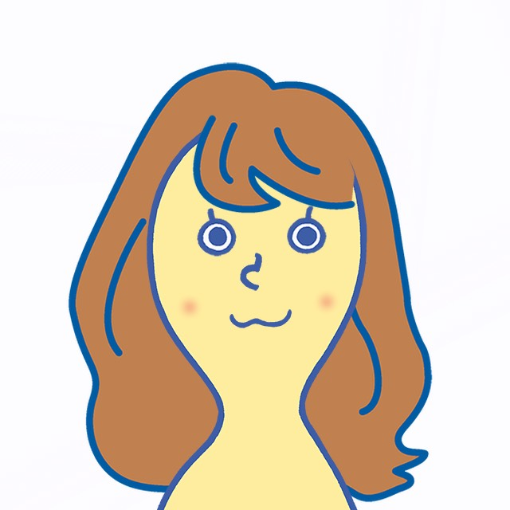

活動を見る


概要を知る
＜活動内容＞
南山プラスは２つのプラスのもと活動しています！
①学生にプラスになるイベント企画や情報を発信
②他大学生・社会人をプラスしたコラボ企画を開催
あなたの「やりたい！」をイベント企画を通して実現しませんか？
〜過去の活動〜
・「南山スタートダッシュ」〜先輩に聞く！後悔しない大学一年生の過ごし方〜
・「何のために留学に行くの？」〜留学シミュレーション〜
・「留学準備のために必要な３つのこととは？」
（ゲストスピーカーによるクロストーク型イベント）
・教育系NPOとのコラボ企画「Co*llaboration」〜芸術の和/輪〜
（尺八×ロックダンス×歌の新感覚エンターテイメント）
南山プラスは２つのプラスのもと活動しています！
①学生にプラスになるイベント企画や情報を発信
②他大学生・社会人をプラスしたコラボ企画を開催
あなたの「やりたい！」をイベント企画を通して実現しませんか？
〜過去の活動〜
・「南山スタートダッシュ」〜先輩に聞く！後悔しない大学一年生の過ごし方〜
・「何のために留学に行くの？」〜留学シミュレーション〜
・「留学準備のために必要な３つのこととは？」
（ゲストスピーカーによるクロストーク型イベント）
・教育系NPOとのコラボ企画「Co*llaboration」〜芸術の和/輪〜
（尺八×ロックダンス×歌の新感覚エンターテイメント）
全て表示
SNSで繋がる
メンバーからのひとこと
南山経済3年生
「自己成長」
イベント企画を通して今何が必要とされていて、どうそれを形にしていくかを考える中で、コミュニケーション力や行動力が必要でした。そうした力を成長させることができ、自分の自信にもつながりました。

南山国際教養2年生
「人との関わり」
イベントでは他大学生や社会人の方と関わる機会があり、そういった方々の考えに触れ、活動を共にすることはとても刺激になりました。また運営が少人数のためアットホームで話しやすい雰囲気のため、深い繋がりを持てます。
こんな人におすすめ
- ＃型にはまらない個性を生かしたい
- ＃自分でイベントを企画したい
- ＃人脈を広げたい
SNSで繋がる
「アイデアが形になる楽しさ」
計画性をもってアイデアを実現させていく過程は、時に大変ですがとてもやりがいがあります。また様々な活動を通して今までになかった自分の個性も見つかるようになりました。